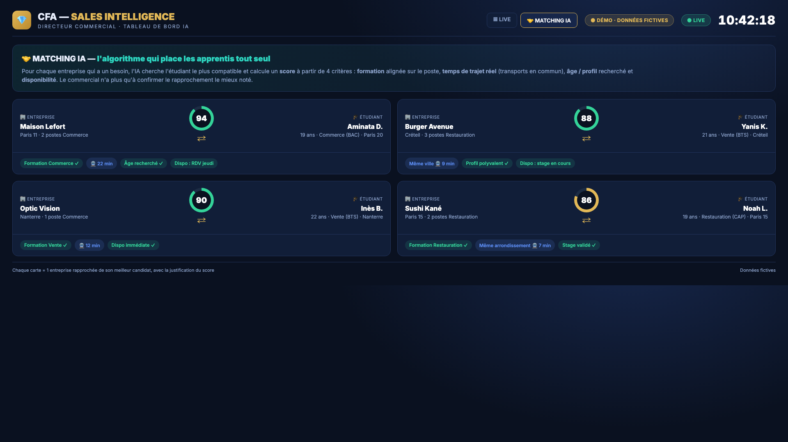
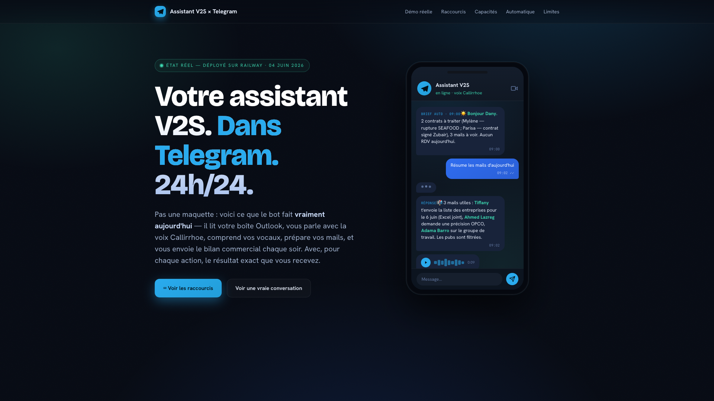
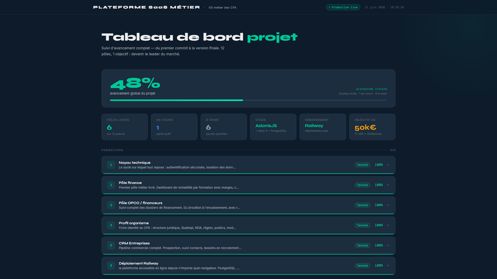
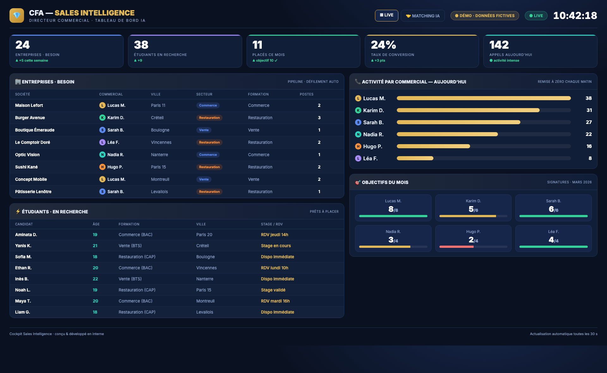

Un mur de pilotage que j'ai conçu et fait développer : entreprises avec un besoin, activité de chaque commercial, étudiants prêts à placer, objectifs du mois — et un moteur de matching IA qui rapproche automatiquement chaque entreprise du candidat le plus compatible. Cliquez les onglets, c'est interactif.
Tous bâtis en développement assisté par IA (Claude Code). Captures de démo ci-dessous.

L'algorithme note chaque rapprochement sur la formation, le temps de trajet réel et le profil. Le commercial confirme, c'est tout.

Brief commercial du matin, alertes sur les dossiers à risque, lecture des mails, pilotage du CRM — à l'écrit comme à la voix.

Cahier des charges rédigé et équipe d'ingénieurs pilotée pour bâtir une plateforme complète : finances, suivi, conformité.

KPI consolidés en temps réel et diffusés automatiquement sur Teams, Telegram et e-mail. Fini la saisie manuelle.